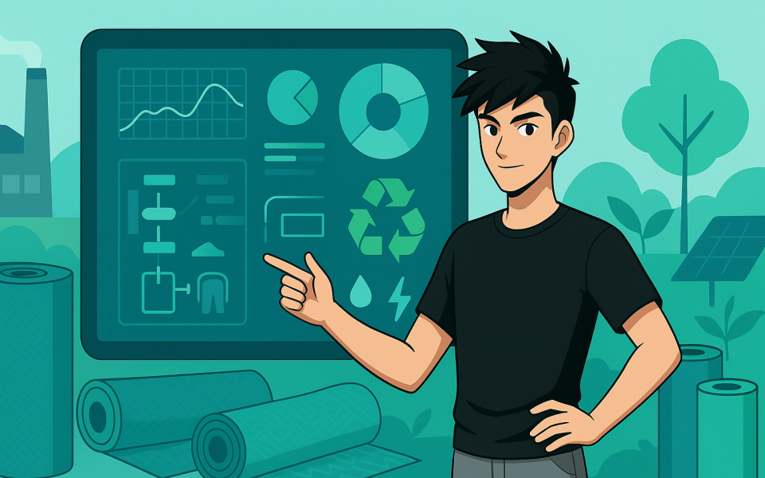

Comment pourrions-nous améliorer la chaine de production du textile afin réduire l’impact environnementale ?
Avec Matthis NHO, Product Designer
Récapitulatif
Ce projet avait pour but de trouver une problématique contemporaine dans notre société et de pour y répondre que ce soit d’une manière digital ou physique.J’ai choisi de me concentrer sur le textile et l’environnement car c’est un sujet qui m’intéresse énormément surtout depuis que je travaille dans le monde de la mode mais surtout c’est l’enjeu de demain.
Contexte

L’environnement est un des sujets majeurs de notre époque, pour nos anciennes générations, pour la nôtre et pour l’avenir. Nous sommes à un croisement dans notre vie où le choix n’est plus, il faut changer de vision et de mode de consommation afin de préserver notre environnement, notre planète et l’homme.
Le secteur du textile est l’un des plus gros problèmes pour l’environnement car ça chaine de production pollue énormément. Que ce soi pour les matières premières, la fabrication, l’humain, ou encore l’export, il faut remédier à cela afin de trouver des solutions pour améliorer cette production.


L’environnement est un des sujets majeurs de notre époque, pour nos anciennes générations, pour la nôtre et pour l’avenir. Nous sommes à un croisement dans notre vie où le choix n’est plus, il faut changer de vision et de mode de consommation afin de préserver notre environnement, notre planète et l’homme.
De plus les marques n’ont pas ou peu de visibilité sur leur chaine d’approvisionnement il y a donc un manque de transparence et enfin il y a un problème au niveau des stocks car il y a des tonnes et des tonnes de vêtement brûlés pour cause d’invendus.
Idéation de concept

Afin de trouver plusieurs débuts d’idées, j’ai réalisé un Crazy Eight afin de mettre les idées qui m’ont traversé l’esprit : 1 — Système d’épuration d’eau renouvelable 2 — Traçabilité et analyse de la durabilité d’un vêtements (via un QR code par exemple). 3 — Outils de gestion Data Green des matières premières avec indicateur d’environnementaux sous forme de Dashboard. 4 — Smart city du textile 5 — application de prévision des stocks de vêtements 6 — Usine et atelier de couture d’éco-construction 7 — services de custom et de récupération des vêtements avec un nouveau service dans les magasins. 8 — Ferme de matière première à énéergie renouvelable
Après avoir réalisé cet atelier d’idéation, certaines idées ont retenu mon attention comme : Un système de traitement des eaux usées renouvelable, cela peut paraître bête mais comme je les dis, certaines normes sanitaires ne sont pas les mêmes comme en Chine ou l’eau utilisé pour les vêtements est gâchée après ou va dans les égouts après être utilisé pour transformer des vêtements, un nouveau système de traitement des eaux renouvelable pour le textile pourrait améliorer et réduire l’impact environnemental pour le secteur du textile. L’application de prévisions des stocks de vêtements, en effet le problème des stocks invendus ou non recyclés est un facteur important de la production de vêtements à force de produire, produire et produire il y en a trop il faut changer de méthode “le bon vêtements au bon moment” grâce à un outil de prévision des stocks à avoir dans chaque région où pays par rapport à l’achat de chaque type de vêtements afin de gérer les stocks correctement pour chaque magasin serait un outil intéressant et indispensable pour chaque marque du textile. L’outil de gestion analytique sous formes de Dashboard pour les marques, pourrait être une bonne solution pour mesurer l’impact environnemental de chaque matière première afin d’améliorer en continue la chaine de production pour quel impact le moins l’environnement dans chaque région des chaines d’approvisionnement. De plus Google et Stella MCcartney ont déjà commencés à créer un début d’outil qui permettrai cela, ce qui serais révolutionnaire pour ma part.
Cas Particulier de la Chine : Densité d'Information et Esthétique

Par conséquent l’idée que j’ai choisie et qui m’a semblé la meilleure selon moi est le data Green via le Dashboard de gestion des matières premières dans la chaine d’approvisionnement du textile.
Cela permettra dans un premier cas d’analyser la chaine de production dans son ensemble avec une transparence à 100% et de pouvoir visualiser avec des indicateurs environnementaux, tel que les gaz à effet de serre (GES) , la quantité d’eau utilisée, les déchets comme les pesticides, la pollution de l’air, la pollution des eaux usées, l’électricité, l’impact environnemental de chaque matière première comme le coton, la viscose, le cuir etc.
Ce n’est pas tout, cet outil permettra donc de comparer telle ou telle matière par rapport à l’impact environnemental qu’elle aura mais également de comparer les différents lieux d’approvisionnement d’une même matière première afin de voir comment l’une ou l’autre peut être améliorée par rapport à la région où elle se situe pour diminuer son impact environnemental.
Le but est d’avoir une transparence de toute la chaine de production de la marque en question, afin qu’elle puisse prendre de meilleure décision pour l’environnement. Cette idée me permet de rassembler la plupart de mes idées dans un car les autres idées pourrait être des axes d’améliorations en regardant le Dashboard pour comparer les différentes données pour trouver de nouvelles solutions et changer le mode de production et de consommation du textile à l’avenir.
Concept design UI du dashboard

Étant donné que Google a commencé son travail pour créer l’outil, j’ai voulu reprendre les codes google et le créer de mon point de vue, C’est également l’occasion de pouvoir travaille sur un nouveau style d’interface étant la data visualisation que je n’ai jamais fait encore.
Ce screen design concept, le début de du home de l’interface du dashboard avec une vue globale.
La map globale représenterait les différents lieux de toute la chaine d’approvisionnement d’une matière première de la marque. Les icônes à gauche sont les différents indicateurs de pollution de cette chaine d’approvisionnement pour cette matière, du côté gauche nous avons les filtres afin de voir les évolutions de cette map globale par année, par mois, par matière première.
Si l’on survole une des pastilles comme la jaune actuellement, on peut voir l’info de base sur la map, si nous cliquons dessus, le tableau de droite affichera toutes les informations concernant ce lieu et son impact environnemental propre à lui dans la région et le pays où il se trouve.
En dessous nous aurons un graphique représentant la part de chaque étape du processus pour cette matière dans ce lieu et à gauche un graphique de comparaison les différents indicateurs de pollution de l’impact environnemental.
À l’avenir j’avais pensé pouvoir intégrer et programmer des scénarios qu’une entreprise souhaiterait atteindre grâce aux données analysées avec une IA où des algorithmes puissants afin d’atteindre les objectifs fixés par l’entreprise pour chaque lieu de sa chaine d’approvisionnent. Si l’entreprise souhaite scénario réduire la pollution de l’eau utilisée de 10% dans l’atelier de Hong Kong il y aurait plusieurs petites optimisations à faire afin d’atteindre l’objectif comme un système de traitement des eaux usées renouvelables.

Conclusion du projet UI
J’espère que vous avez aimé lu cet article pour ce projet UI, j’ai beaucoup apprécié de pouvoir le faire surtout la partie réflexion et interface et ce fût le bon moment pour apprendre à faire une interface de data visualisation même s’il y a encore beaucoup d’améliorations à l’avenir mais je vais continuer afin de réaliser l’intégralité du dashboard de mon point de vue.
Mes recherches m’ont permis de voir qu’à l’avenir cela était possible via Google et Stella Mccartney ainsi que WWW Suède récemment je vous invite à regarder les articles les concernant et hâte de voir ce qui va en sortir.